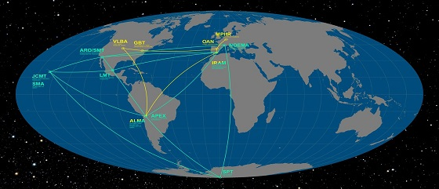
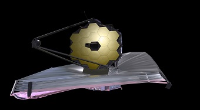

Blog
-
FEATURED TOPICS

Eureka! Scientists Photograph a Black Hole for the 1st Time
April 10, 2019The Event Horizon Telescope has captured a photo of a supermassive black hole at the center of M87, a galaxy 54 million light years away.
-

Event Horizon Telescope
Worldwide CollaborationA large telescope array consisting of a global network of radio telescopes. The EHT project combines data from several very-long-baseline interferometry stations around Earth with angular resolution sufficient to observe objects the size of a supermassive black hole's event horizon.
-
Soon to be launched:
JAMES WEBB TELESCOPE
DATE OF LAUNCH:2021The JWST will provide greatly improved resolution and sensitivity over the Hubble, and will enable a broad range of investigations across the fields of astronomy and cosmology
-
RECENT POSTS
-

ALIEN LIFE
FEBRUARY 3, 2023 -

THE GALAXY
FEBRUARY 1, 2023
-